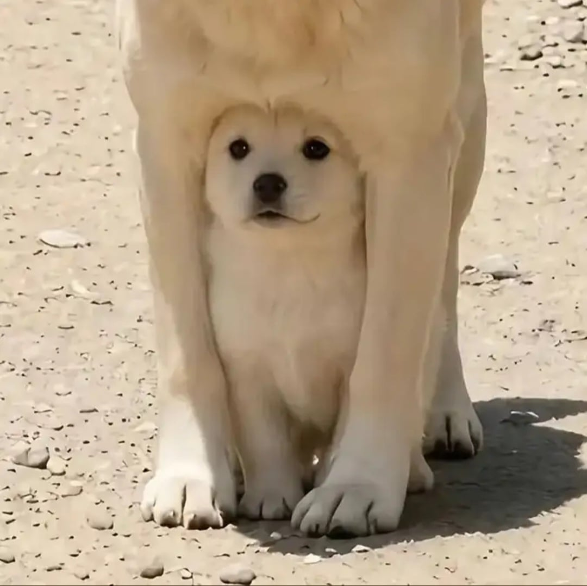
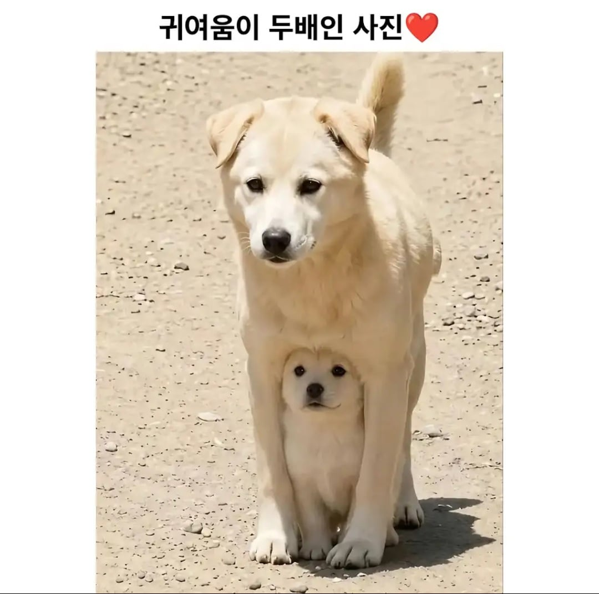

62 · 14 · 10 시간 전 · 원문


엄마도 귀여움.
수집 당시 댓글 14개
순라면진한맛 · 18 시간 전
https://youtu.be/Kz9njANzMQA?si=5pbeIPH3S9e-Nvv8
돈까쓰으 · 18 시간 전
엄마(아님)
내거시기작음 · 16 시간 전
엄마도 애기인데
↳ 답글 · 구미호 · 11 시간 전
https://youtu.be/Kz9njANzMQA엄마 아니래
7ㅔ이 · 13 시간 전
두글자로 귀두
오공본드 · 13 시간 전
동영상에 엄마아님이라고 자막나올걸? ㅋㅋㅋ
칡쇼 · 12 시간 전
졸귀
그뢰이재됬냐 · 11 시간 전
이젠 퍼리쬬까지 등장하는구나!
사이클롭스 · 11 시간 전
포근해 보이네 ㅋㅋㅋㅋㅋㅋ
나를묶고가둔다면사랑도묶 · 11 시간 전
수컷에다가 모르는 강아지래
아무것도아닌 · 11 시간 전
귀엽다고 해봐야 11배에서 12배...
모두예할때아니요함 · 10 시간 전
저 새끼 강아지가 지금쯤 애 낳았겠다
어벤타허니잼 · 10 시간 전
맛은세배
번쩍필살검무 · 9 시간 전
귀여워~
https://youtu.be/Kz9njANzMQA?si=5pbeIPH3S9e-Nvv8